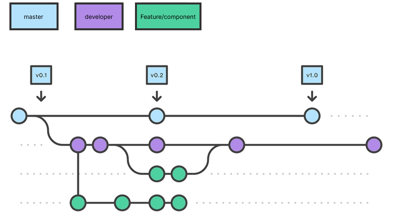

Til versionsstyring af dette projekt er der brugt Git, som er et distribueret VCS. Det giver god mulighed for samarbejde mellem udviklere. Git fungerer via tre faser: Working directory → Staging area → Repository.
Working directory: Din lokale mappe med filer. Når du redigerer filen, ved Git noget har ændret sig, men gør intet ved det.
Staging area: Når du bruger git add eller via din IDEs GUI flyttes ændringerne i filen til en "forberedelsesboks".
Repository: Når du kører git commit eller igen via din IDEs GUI gemmes det du har tilføjet i din "forberedelsesboks" som et snapshot i Git's historik sammen med et unikt commit ID.
Mest brugte git kommandoer:
| Kommando | Beskrivelse |
|---|---|
git add |
Tilføjer ændringer til staging area klar til commit |
git commit -m "Your commit message" |
Gemmer de staged ændringer med en besked der beskriver hvad der er lavet |
git push |
Sender dine lokale commits op til remote repository på GitHub |
git pull |
Henter og integrerer seneste ændringer fra remote repository |
git checkout your-branch-name |
Skifter til en eksisterende branch. Tilføj -b før branch-navnet for at oprette og skifte til en ny branch |
git merge merging-branch-name |
Merger en branch ind i den aktive branch. Husk at skifte til den branch du vil merge ind i først |
Til projektet er der brugt GitHub som remote repository, hvor projektet ligger frit tilgængeligt https://github.com/JonatanEmil/pentia-dashboard-app. Github udbyder gode muligheder for forberedt samarbejde, som issues der har tilknyttede ID'er, og projekts, der kan forbindes med issues.
Projektet har tilstræbt Feature Branching som branching-strategi.
Det betyder at der oprettes en ny branch for hver feature eller Vue-komponent der udvikles.
Når en feature er færdig, merges den tilbage til developer branchen via et pull request eller git merge. developer bruges som integrationsgren
og merges ind i master når koden er stabil for en produktionsversion.
master ← developer ← feature/komponent-navn

Modificeret fra Git Branching Strategies: A Comprehensive GuideI projektet er der tilstræbt gode commit messages. Det vigtigste er at de skrives i nutid, er korte og er specifikke omkring hvad de ændrer.
God commitbesked: "Add correct path name for image seeder and correct props for itemlist in clientview #32"
Middelmådig commitbesked: "style for CarouselHandler.vue #98"
Dårlig commitbesked: "..."